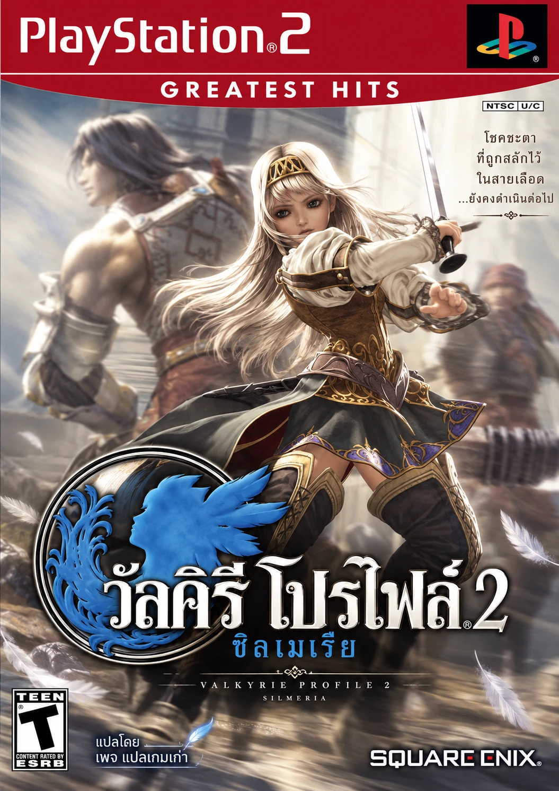

Valkyrie Profile 2: Silmeria
ภาษาไทย TEST 005 · PlayStation 2
Valkyrie Profile 2: Silmeria (USA) — เพจแปลเกมเก่า
เนื้อเรื่องโดยย่อ
เรื่องราวของอลิเซีย เจ้าหญิงแห่งอาณาจักรดิแพน ผู้มีวิญญาณของวัลคิรี "ซิลเมเรีย" ที่ต่อต้านโอดินสถิตอยู่ในร่าง ทั้งสองต้องหนีการไล่ล่าของวัลคิรีฮริสต์ แล้วออกเดินทางกับเพื่อนร่วมทางเพื่อหาทางปลดปล่อยตนเองจากชะตาที่เหล่าเทพกำหนด
เกม RPG ภาคก่อนหน้าของ Valkyrie Profile จาก tri-Ace มีระบบต่อสู้ที่ต้องวางตำแหน่งบนสนามแบบเรียลไทม์ ต่อคอมโบ และเรียกวิญญาณวีรชน (ไอน์เฮอร์ยาร์) มาร่วมรบ
สถานะการทดสอบ
ตรวจโครงสร้างไฟล์และ SHA-256 ของไฟล์ผลลัพธ์ผ่านครบ รุ่นก่อนหน้าเล่นได้ถึงฉากเมืองท่าในบทที่ 1 แล้วจอดำ รุ่นนี้แก้สาเหตุนั้นแล้ว แต่ยังไม่ได้ยืนยันการเล่นต่อจากจุดนั้นใน PCSX2 ให้เริ่มเกมใหม่ (New Game) และอย่าใช้ save state จากรุ่นก่อน
ตรวจโครงสร้างไฟล์และ SHA-256 ของไฟล์ผลลัพธ์ผ่านครบ รุ่นก่อนหน้าเล่นได้ถึงฉากเมืองท่าในบทที่ 1 แล้วจอดำ รุ่นนี้แก้สาเหตุนั้นแล้ว แต่ยังไม่ได้ยืนยันการเล่นต่อจากจุดนั้นใน PCSX2 ให้เริ่มเกมใหม่ (New Game) และอย่าใช้ save state จากรุ่นก่อน
ไฟล์ต้นฉบับที่ต้องใช้
ใช้กับรุ่น USA ที่ยังไม่ดัดแปลงเท่านั้น รุ่นยุโรป (PAL) หรือญี่ปุ่นใช้ไม่ได้ ระบบตรวจ SHA-256 ก่อนสร้างไฟล์ทุกครั้ง
| เกม | Valkyrie Profile 2: Silmeria |
| ประเทศ/โซน | USA · NTSC-U/C (อเมริกา) |
| รหัสเกม (ID) | SLUS-21452 |
| ไฟล์ | ISO แผ่น DVD ต้นฉบับ เช่น Valkyrie Profile 2 - Silmeria (USA).iso |
| ขนาด | 4,661,706,752 ไบต์ |
- ใช้ Chrome หรือ Edge บนคอมพิวเตอร์ และมีพื้นที่ว่างอย่างน้อย 6.2 GB สำหรับไฟล์ที่ดาวน์โหลด
- เลือกไฟล์ ISO ต้นฉบับ แล้วกดสร้างไฟล์ภาษาไทย ระบบทำงานในเบราว์เซอร์ของคุณ ไม่อัปโหลดไฟล์เกม
- รอตรวจ SHA-256 สองรอบ (ต้นฉบับและไฟล์ไทย) อาจใช้เวลาหลายนาที
- ได้ไฟล์
VP2_Silmeria_Thai_TEST005.iso(6,138,470,400 ไบต์) นำไปเปิดใน PCSX2 แล้วเริ่มเกมใหม่
เลือกไฟล์ ISO หรือลากมาวางในกรอบนี้
ไฟล์ ISO ต้นฉบับไม่ถูกอัปโหลดหรือส่งออกจากเครื่อง
ไฟล์ ISO ต้นฉบับไม่ถูกอัปโหลดหรือส่งออกจากเครื่อง
กำลังโหลดแพตช์…
SHA-256 สำหรับตรวจสอบ
ISO ต้นฉบับ (USA, SLUS-21452)a8a602dc0b77e7ddd352b68f25366f49d93cdb5a07e870ca58542590dad17c9e
ISO ภาษาไทย TEST 005ac82aee8ccb95c2a1396ae438ae957d18a5c65feeb6f058961c2845147b5fa89